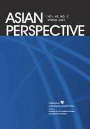
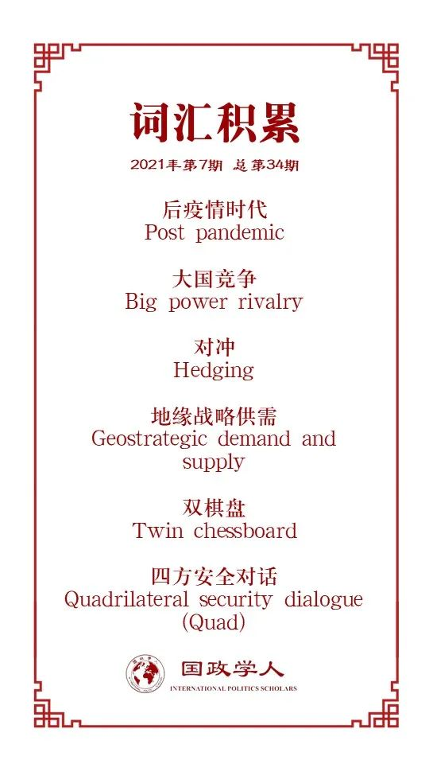

收录于合集 #理论研究 96个

作品简介
【作者】 郭清水（Cheng-Chwee Kuik），马来西亚国立大学马来西亚与国际问题研究所(IKMAS)副教授兼亚洲研究中心主任，曾担任普林斯顿- 哈佛中国和世界项目的博士后研究助理，研究重点是小国的外交政策行为，亚洲安全，中国-东盟关系和东南亚国际关系。
【编译】 李月云（国政学人编译员，中国人民大学外交学专业硕士研究生）
【审核】 黄慧彬 姚寰宇
【排版】 石寒冰
【美编 】杜丛竹
【来源】 Cheng-Chwee Kuik. “The Twin Chessboards of US-China Rivalry: Impact on the Geostrategic Supply and Demand in Post-pandemic Asia.” Asian perspective , vol.45, no.1, winter 2021, pp.157-176, doi: 10.1353/apr.2021.0020.
【归档】 《国际关系前沿》2021年第7期，总第34期。
期刊简介

《亚洲透视》（ Asian Perspective ）是庆南大学远东研究所主办、约翰·霍普金斯大学出版社出版的社会科学杂志。该杂志将亚洲视角应用于世界和比较政治。它以当代至关重要的关注为重点，探讨了影响当今亚洲的地区、国际和跨国问题。《亚洲透视》经过同行评审，每季度出版一次。该期刊现已进入第四个十年，它欢迎跨学科研究，并致力于促进学者与决策者之间的热烈交流。
中美竞争的双棋盘：对后疫情时代亚洲地缘战略供需的影响
** The Twin Chessboards of US-China Rivalry: Impact on the Geostrategic Supply and Demand in Post-pandemic Asia.**
郭清水
内容提要
本文从小国视角来探讨后疫情时代的中美竞争。在对大国竞争的双棋盘——即高低政治的起源进行追溯后，本文以东南亚为重点，评估这些竞争对后疫情时代亚洲秩序的影响。本文认为，尽管中美在高政治领域（军事领域）的竞争在快速上升，但在像基础设施和互联互通发展、科技、贸易、金融、公共卫生等其他功能性领域，低政治的重要性日益显现，且正在塑造冷战2.0的前景、步伐和模式。中美两国在两个棋盘上的敌意愈演愈烈，竞争的范围不断扩大，玩家的数量日益增加，小国面临的压力也越来越大。但与此同时小国拥有了更多的行动空间，东南亚地缘战略的供需关系得以重塑。因此，小国与不同的行为体发展多层次的伙伴关系，从而在不确定、高风险的环境中拓宽自身的对冲选择。
关键词
大国政治、中美关系、东南亚、小国、高政治、低政治、地缘战略供需、对冲。
文章导读
权力本质上是通过竞争来显现和增长的。对于强大的行为体而言，通过竞争来获取影响力、财富和地位，是刻在其骨子里的本能。当权力竞争成为国际关系中一个重复出现的事实时，围绕该主题会衍生出一些变体：大国如何竞争、竞争什么、与谁竞争、在什么平台上竞争，这是竞争的棋盘。棋盘的数量和形式很重要，因为它们决定了权力竞争如何进行以及国家联盟如何形成、维持和转变。权力的棋盘是地缘战略供需交汇的市场，是大国与小国之间展开谈判和国际间交易方向演变的场所。
最新一轮的大国竞争是美中之间正在进行的竞争。自2017年特朗普上台以来，美中关系一直被南中国海问题、贸易、5G数字技术等问题所主导。疏远已经代替长达数十年的交往成为双边关系的主要方向。为了对抗中国日益增长的地区自信，美国政府启动了“自由开放的印度洋- 太平洋”(FOIP)战略。目前，两国都释放出信号，表示捍卫自己的利益的决心。一些人警告说，美国和中国正陷入“修昔底德陷阱(Thucydides Trap)”，在这个陷阱中，当一个已经确立地位的大国(美国)感到受到一个崛起中的大国(中国)的威胁时，最有可能发生的结果就是战争。虽然学者们就战争是否不可避免进行过辩论，但很明显，美国和中国之间的战略竞争和紧张态势很可能会继续下去。
许多分析人士将中美关系的恶性循环归咎于结构性和国内因素。从结构上讲，系统性权力转移已经造成了双方的恐惧。美国视中国为其世界领先地位的威胁，而中国则认为美国的印太战略是为了阻止其作为世界强国获得应有地位。这些结构性因素又受到许多国内因素的推波助澜。毕竟，中美各自都希望再次强大起来。此外，中美之间还存在意识形态和文化差异、民族主义情绪、对资源的追求、不平衡的经济联系，以及涉及美国在亚洲的盟友和伙伴的领土争端等问题。
疫情期间，美中相互间的敌意和猜疑上升。美国和中国在此期间不仅缺乏双边和多边层面的合作，相反还互相指责，批评对方对这一流行病的最初反应。竞争加剧的迹象比比皆是，南中国海、5G网络、台湾、香港和新疆等新老问题持续发酵，伴随着不断升级和扩大的竞争，双方在技术、经济、金融和人民交往等方面不断脱节。到2020年中期，美国对华政策的特征日益显现，主要有几个重点: 加强威慑(特别是在南海)、战略脱钩(不仅在技术上，还包括经济生产领域) ，以及多层次的联盟建设，包括双边的，三边的，四边的，和包括盟友伙伴在内的多层次的机制。
目前的形势还不是一个全面的遏制式的经典平衡。尽管美国新出现的政策方针旨在挑战和制约中国，但这些方针是通过有限的对话和“注重结果的接触”来实现的，目的是保持与北京的沟通与开放合作。
因此，美国和中国不仅在军事和海事安全的传统高政治棋盘上竞争，而且还在基础设施连接建设、技术、贸易和其他非军事领域的低政治棋盘上竞争。即使2020年的总统选举带来了美国领导层的更迭，这种趋势仍可能继续下去，一是因为美国和中国之间存在多重依赖关系，二是因为国际层次地缘战略供求关系的变化，下文将对此进行讨论。
本文共有三个部分。第一部分提出了主要论点。第二部分论述当中美两国在高政治领域继续竞争时，低政治竞争的出现。第三部分以东南亚为重点，分析“双棋盘”对后疫情时代国际秩序演变的影响。
01
主要论点
美中竞争“双棋盘”的出现，对大国之争和疫情爆发后亚洲的小国(重新)结盟都具有长期影响，开启了三个新生但意义深远的进程。首先，两个棋盘正在塑造冷战2.0的形式和前景。其次，这两个棋盘不仅为两个相互竞争的大国提供了更大的操控空间，也为中等大国和小国提供了更大的操作空间。第三，上述过程的净效应正在扩大并可能会深化亚洲多数参与者的对冲选择，包括印度和日本等国。在东南亚和其他地区，小国的对冲仍然是可能的，因为中美之间的竞争还没有升级为彻底的武装冲突。冷战2.0可能已经开始了，但这很可能是另一种冷战。这一次，大国之间的竞争可能不会演变成区域和全球对立阵营之间明显的两极分化。这是因为：第一，经济相互依存(不仅是中国和美国之间，而且是中国和几乎所有美国盟友和伙伴之间的相互依存) ; 第二，多边平台(特别是各种东盟加区域论坛，这些论坛允许主要大国和关键行为体参与亚洲范围的区域合作，即使面对主要大国之间日益激烈的竞争) ; 第三，缺乏明确的意识形态划分。
02
亚洲地缘政治的双棋盘
高政治领域一直是亚洲地缘政治的主要棋盘。在过去的十年里，东南亚海域已经成为中美地缘政治竞争的主要舞台。为捍卫在南中国海的利益，中国采取日益强硬的行动，如加强海上巡逻、建造人工岛屿、部署军事力量等；另一方面，美国直接介入南中国海问题，开展系列自由航行行动，重新召集其在亚洲的盟友，这表明中美之间的高政治竞争不断升级。美国2017年发布的《国家安全战略》及2018年发表的《国家防务战略》将中国描述为“战略竞争对手”和“修正主义国家”。2017年11月，美重启四方安全对话，随后美日印澳宣布自己的印太战略，国家行为体的数量不断增加，加深了这个由军备、联盟和国防安全组成的传统棋盘上的权力竞争。
随着地缘政治竞争棋盘的延伸，包括基础设施互联互通建设、贸易和区域生产链在内的低政治领域的发展日渐重要。这主要是由中国的经济治国方略推动的，主要是通过自2013年以来以互联互通为基础的一带一路倡议项目、亚投行和其他中国支持的多边开发银行项目实现的。最初，中国的经济行动主义只吸引了日本的竞争和反击。直到2018年，美国和其他国家才开始认真努力，与中国展开竞争，限制中国的经济影响力。自2018年起，美国针对中国所采取的系列行动进一步推动了低政治合作的出现，成为地缘政治竞争的第二个棋盘。
03
影响：地缘战略供需的改变
新兴的“双棋盘”对于后疫情时代国际秩序意味着什么？作者认为，中美两国在这两个棋盘上的竞争，正在改变国际层面地缘战略的供求关系，实际上逐渐改变了大国竞争和小国联盟的方式。这些进程正在影响冷战2.0展开的方式。
中美双棋盘竞争的影响是多方面的。首先，在需求侧，尽管安全仍然是最主要的地缘战略产品，繁荣与自主等非安全产品正变得越来越受追捧。其次，在需求侧，尽管美国和中国一直且将继续是亚洲地区公共和私人产品的主要供应国，但它们不是唯一的供应者，这在第二棋盘上尤为明显。日本、欧洲以及东南亚地区等国家也构成了非安全产品的另一个供应层。第三，为了在多层合作安排中实现更优的均衡，理性国家可能会在“双棋盘”之间扩大各自的对冲选择。由于大国关系变得越来越不确定，小国更需要通过不站队、抵消多重风险和分散其地缘战略联系来对冲。而“双棋盘”增加了这些选择的空间和可能性，小国可以使用一个棋盘的潜在收益来抵消另一个棋盘的风险。
04
结论：追求不可能的（地缘政治）三位一体？
这两个棋盘的复杂性表明，21世纪既不会是美国主导的世纪，也不会是中国主导的世纪。毕竟，每个竞争对手在不同的棋盘上都享有相对优势。美国在高政治领域仍然占据上风，另一方面，中国在低政治领域正取得更大进展。
总而言之，新兴的“双棋盘”可能会加强亚洲秩序的三大支柱结构: 美国主导的联盟体系、以东盟为基础的多边主义和以中国为中心的发展主义。对东南亚国家来说，每个支柱都有自己的优点和缺点，这三个支柱中的每一个都很重要，但也不确定，甚至有风险。对他们而言，最好的选择不是选择一个支柱，而拒绝其他，而是以最适合他们自己的方式，与每个支柱生活在一起，并利用它们来优化不可能的战略三位一体。
译者评述
这篇文章以大国战略竞争为主题，探讨中美竞争的范围如何从高政治领域不断扩散到低政治领域，从而对亚洲地区特别是东南亚地区国家行为以及地区秩序造成的影响。作者认为，中美竞争的战略态势会持续升级，从而引发另一种形式的“新冷战”，即冷战2.0版本，在此背景下，东南亚国家在面临着选边站队的压力的同时，也将通过对冲收获更大的行动空间。
首先，关于中美战略竞争的问题。作者把中美战略竞争划分为高政治和低政治两个领域，认为不同于传统军事领域的竞争，中美竞争目前更多地是集中于经济、技术、基础设施建设等低政治领域。自2017美国《国家安全战略报告》的发布吹响了对华战略竞争的号角后，中美竞争从经济、地缘政治、意识形态乃至于全球治理等多领域同时展开，并表现出与小布什、奥巴马政府时期明显不同的“全政府性”，特朗普拟结合外交、信息、经济、金融、情报、执法和军事等多种要素来配合竞争战略。中美关系面临着建交四十余年的最大挑战，两国竞争弥漫着浓厚的“冷战”气息。在这种氛围下，传统的权力之争与新出现的制度之争相叠加，造成中美关系的急剧恶化。在文中，作者提到尽管2020年的总统选举会造成美国领导层的更迭，中美战略竞争的趋势仍有可能持续下去。拜登上台后，美国政府将中国定位为美国面临的“最严峻竞争者”，强调竞争是中美关系的本质，宣扬从所谓的“实力地位”出发，运用竞争、对抗、合作三种政策手段处理对华关系。相较于特朗普政府，拜登政府注重与中国展开“正向竞争”，以增强美国自身竞争力为基础，以构建复合型阵营为依托，以在印太地区加大对华威慑为重点，以挑动意识形态对立为抓手，围绕对华“长期性、战略性竞争”布局谋事。随着拜登政府全面深化对华战略竞争，维护中美关系稳定、实现中美良性互动面临新的复杂考验。
其次，关于中美战略竞争态势下东南亚地区国家的选择。作者认为在大国竞争的背景下，对东南亚国家而言，最好的选择是进行对冲，不完全倒向任何一方，以实现自身的繁荣发展为目标，优化自身的战略选择。自大航海时代以来，东南亚区域一直是大国竞争的角逐地，东南亚国家普遍倾向积极接纳美国的军事庇护，并乐于深化与中国的经贸往来。然后，2018年以来，中美之间愈演愈烈的竞争关系正改变着东南页各国的战略空间，迫使各国依据地缘政治重新思考发展新的策略和区域秩序。新加坡和马来西亚深谙国家间政治的生存之道，坚持大国平衡的基本原则，明确表示不站队，主张东盟自身应具有自主意志，不在中美之间做出选择；作为区域大国的越南和印尼并未对中美竞争的加剧表现出过多忧虑，而是关注如何从中寻求机会提升本国的区域影响力；菲律宾和泰国作为美国在东南亚地区的两个正式同盟国，其外交政策也随着国内政治变动而有所摇摆；作为东南亚地区的陆地国家，柬埔寨、老挝、缅甸与中国不存在南海争端，与美国没有直接深入的军事利益，且在地缘位置和历史传统等因素的影响下，与中国的关系一直较为亲密，在中美竞争中，三国期望寻求更大的自主意识。
新冠肺炎疫情在全球的持续发酵为中国在东南亚的发展带来了新的契机，中国与东盟的贸易与投资实现了逆势增长，但需要注意的是，东南亚国家在中国战略竞争中的态度还潜伏着两个变量：一是东南亚国家复杂的国内政治环境所带来的不确定性，二是东南亚各国及东盟逐步加强的自主意识。
参考文献
[1]赵明昊，《拜登执政与美国对华战略竞争走向》，载《和平与发展》，2021年第3期，14页-36页。
[2]张弛，《竞争性地区主义与亚洲合作的现状及未来》，载《东北亚论坛》，2021年第2期，85页-99页。
[3]孙云霄，《逐鹿之地：中美竞争格局中的东南亚抉择》，载《文化纵横》2021年第1期，14页-17页。
[4]聂文娟，《中美竞争态势下东南亚地区权力格局的演变》，载《世界经济与政治论坛》，2020年第2期，21页-48页。
[5]吴心伯，《论中美战略竞争》，载《世界经济与政治》，2020年第5期，96页-130页。
词汇整理

文章观点不代表本平台观点，本平台评译分享的文章均出于专业学习之用, 不以任何盈利为目的，内容主要呈现对原文的介绍，原文内容请通过各高校购买的数据库自行下载。
好好学习，天天“在看”